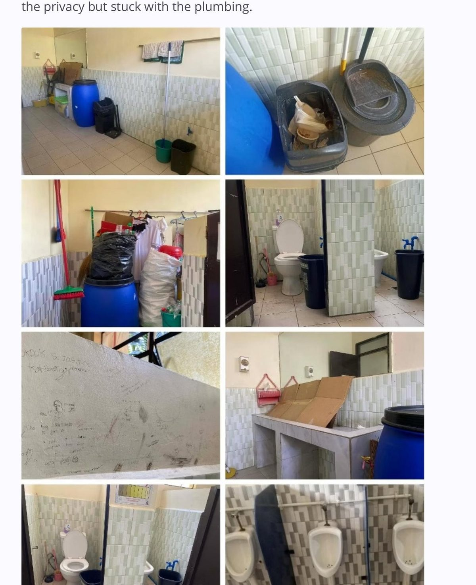

The Comfort Room Divide
A Comparative Study of Male and Female Students’ Satisfaction with School Restroom Facilities at Ilaya Barangka Integrated School
At a Glance
Research Summary
This descriptive-comparative study examined how Senior High School students at IBIS evaluate restroom facilities in terms of cleanliness, privacy, accessibility, and usability. Using survey responses from 89 students and structured restroom observations, the study found mixed satisfaction overall: the largest group reported neutral satisfaction, male students posted a slightly higher overall mean than female students, and the difference was not statistically significant (p = 0.48). Observation data, however, revealed recurring facility gaps in toilet flushing, water availability, hygiene-supply consistency, and some privacy-related hardware issues.
Objectives
- Determine the level of student satisfaction with school restroom facilities at IBIS.
- Compare male and female students’ satisfaction in cleanliness, privacy, accessibility, and usability.
- Identify specific restroom conditions that students consider most problematic.
- Recommend practical improvements to enhance restroom adequacy and student satisfaction.
Context & Method
Access to clean, safe, and functional school restrooms supports student health, dignity, and learning readiness. Guided by the Department of Education’s WinS standards, the study treats school restrooms not as minor support spaces but as essential learning infrastructure. Because gender-based needs may shape restroom experiences, the research asks whether male and female students differ in satisfaction levels and which facility conditions require the most immediate response. The resulting evidence links lived student experience with inspection-based observation, allowing school leaders to compare perception data with actual conditions inside the facilities.
- Descriptive-comparative design was used to measure and compare male and female students’ satisfaction levels.
- The study was conducted at IBIS with 89 SHS respondents (Female n = 48; Male n = 41).
- A Likert-scale Restroom Satisfaction Survey measured four domains: cleanliness, privacy, accessibility, and usability.
- A Restroom Observation Checklist documented functional conditions such as flushing, locks, water availability, and hygiene supplies.
- Weighted means, frequencies, percentages, and an independent-samples t-test were used for analysis.

Key Findings
- The largest response group reported neutral overall satisfaction, indicating mixed student experience rather than strong approval.
- Male students posted a slightly higher overall mean (3.58) than female students (3.29), but the difference was not statistically significant.
- Privacy received some of the strongest ratings, yet maintenance-related concerns remained persistent across other domains.
- Observation data showed frequent issues in toilet flushing, continuous water availability, and regular provision of hygiene supplies.
- The evidence suggests that facility-management quality matters more than gender alone in explaining satisfaction outcomes.
Implications & Recommended Actions
- Prioritize repair of flushing systems and routine clog-prevention checks.
- Improve water pressure and ensure continuous water availability during peak-use periods.
- Adopt a checklist-based cleaning and restocking schedule for soap, tissue, and sanitary supplies.
- Strengthen vandalism control and restore locks, dividers, and privacy-related fixtures.
- Use periodic restroom audits to align maintenance work with actual student experience.
“Restroom adequacy shapes health, dignity, and classroom readiness. When the basic conditions of sanitation fail, student satisfaction reflects not just comfort, but the quality of everyday school management.”